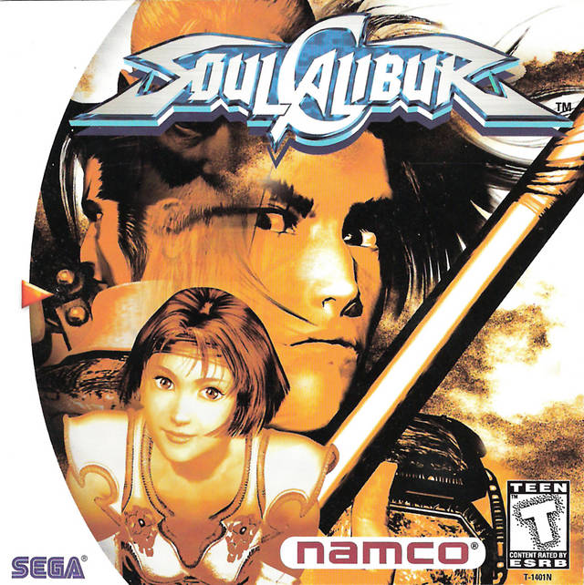

Os 5 melhores jogos da história, segundo a critica
É muito dificil fazer um top 5 dos melhores jogos da História de forma imparcial pois todo mundo tem um jogo que gosta e um que não gosta,
por isso foi criado um site chamado MetaCritic que todas a pessoas pode entrar e colocar suas experiencias e dar uma nota para cada jogo,
fazendo assim um ranking dos melhores jogos de todos os tempos.
1.O melhor da história
De acordo com o Metacritic, o melhor jogo da história é um clássico, “The Legend of Zelda: Ocarina of The Time”,
que foi lançado originalmente para Nintendo 64 e que completou 27 anos desde o seu lançamento .
O game é o mais bem avaliado do portal com uma avaliação de público de 9,1 e da crítica especializada de 99.

O título revolucionário surgiu em uma época em que os jogos 3D ainda davam seus primeiros passos na indústria e era comum ver mais erros do que acertos dos desenvolvedores.
Além dos visuais, o jogo foi muito elogiado pela narrativa e jogabilidade inovadora que apresentou na época
2. SoulCalibur
“SoulCalibur”, um dos mais cultuados entre os fãs de jogos de luta.
O game ficou famoso por, além de possuir visuais bastante avançados para a época e possuir um sistema de combate bem desenvolvido,
o que continuou sendo uma marca repetida nos jogos seguintes da franquia.
